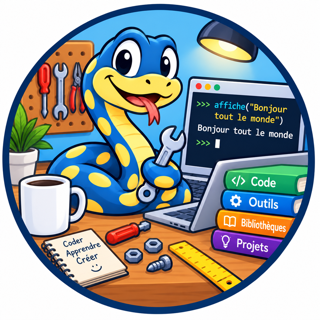

Mode d'emploi de la Pythonerie
Apprendre à programmer en français, pas à pas.
👋 Bienvenue !

Un programme, c'est une liste d'ordres que tu donnes à l'ordinateur. L'ordinateur les suit, un par un, dans l'ordre.
Dans la Pythonerie, tu écris ces ordres en français. Tu peux faire des calculs, écrire des messages, dessiner, faire bouger une tortue et même créer de petits jeux.
💡 Pour les grands qui t'accompagnent
La Pythonerie ressemble au langage Python, avec des mots français. Ce que l'enfant apprend ici lui servira plus tard en Python.
🖥️ L'écran
L'écran de la Pythonerie a trois parties.
À gauche : tes programmes
Tous tes programmes sont rangés ici. Clique sur un nom pour l'ouvrir. En dessous, la liste 🧪 Exemples contient des programmes à essayer : clique dessus pour l'ouvrir, dans un projet à son nom. Plus bas, 🎨 Médias range les sons et les images de la Pythonerie, dans deux répertoires, sounds et images. Pour élargir cette colonne, fais glisser son bord droit. Sur un téléphone, elle est en haut : le bouton ▴ la replie.
Au milieu : l'éditeur
C'est ici que tu écris ton programme.
À droite : le canevas et la console
Le canevas est une feuille de dessin. Ton programme peut y dessiner des formes,
écrire et faire avancer une tortue. En dessous, la console affiche les messages
de ton programme, et la ligne >>> exécute tout de suite ce que tu tapes.
En haut, le bouton ▶ Exécuter lance ton programme. Tant que le programme tourne (une animation, des boutons, une question), il devient ■ Arrêter : un clic l'arrête, et il redevient ▶ Exécuter. Le bouton ❓ Aide montre un résumé de tous les mots.
Le bouton ⛶, au-dessus de l'éditeur, met ton programme en plein écran, pour avoir plus de place. Celui de la console fait de même pour la console ; la console en plein écran a alors son bouton ▶ Exécuter, qui devient ■ Arrêter tant que le programme tourne. Pour revenir, clique sur ✕ ou appuie sur Échap. Quand tu cliques sur ▶ Exécuter, l'éditeur quitte le plein écran, pour que tu voies ce que fait ton programme.
🚀 Ton premier programme
- Clique sur ＋ Créer un programme, au milieu de l'éditeur (ou sur le bouton ＋, au-dessus de l'éditeur).
- Donne un nom à ton programme, par exemple
Bonjour. - Dans l'éditeur, écris :
affiche("Bonjour !")- Clique sur ▶ Exécuter.
Bravo ! 🎉 Tu viens d'écrire ton premier programme.
💡 Astuce
Ton programme est enregistré tout seul. Tu le retrouveras la prochaine fois.
🏆 À toi !
Change le message pour écrire ton prénom.
🐞 Les erreurs
Tout le monde fait des erreurs, même les grands programmeurs. Ce n'est pas grave !
Quand l'ordinateur ne comprend pas, il écrit un message rouge dans la console. Lis-le : il t'aide à trouver ce qui ne va pas.
- As-tu bien fermé tous les guillemets
"et toutes les parenthèses)? - As-tu mis les deux-points
:à la fin de la ligne d'unsiou d'unpour? - As-tu écrit les mots avec leurs accents ? On écrit
épaisseur, pasepaisseur. - Les lignes décalées vers la droite ont-elles toutes le même décalage ?
💬 Écrire des messages
affiche écrit dans la console. Tu peux afficher plusieurs choses à la fois,
en les séparant par des virgules.
affiche("J'ai", 7, "ans")
affiche("2 + 3 =", 2 + 3)Le texte s'écrit entre guillemets : "comme ceci". Les nombres s'écrivent sans guillemets.
Une ligne qui commence par # est un commentaire. L'ordinateur ne la lit pas :
c'est une petite note pour toi.
# Ceci est une note pour moi
affiche("Coucou")📦 Les boîtes (variables)
Une variable, c'est comme une boîte avec une étiquette. Tu ranges quelque chose dedans, et tu le retrouves grâce à l'étiquette.
prénom = "Léa" âge = 8 affiche(prénom, "a", âge, "ans")
Le signe = veut dire : « range ceci dans la boîte ».
Tu peux changer le contenu de la boîte quand tu veux :
points = 0 points = points + 10 points += 5 # c'est la même chose que : points = points + 5 affiche(points)
Pour mettre une boîte dans un texte, écris un f devant les guillemets
et le nom de la boîte entre accolades { } :
prénom = "Tom"
affiche(f"Bonjour {prénom} !")💡 Bon à savoir
Vrai et Faux veulent dire oui et non. Rien veut dire : il n'y a rien dans la boîte.
🔎 Regarder dans une boîte
Sous la console, il y a une ligne qui commence par >>>.
C'est la ligne de commande : ce que tu y tapes est exécuté tout de suite, quand tu appuies sur Entrée.
Après avoir exécuté ton programme, tape le nom d'une boîte pour voir ce qu'il y a dedans :
>>> prénom "Léa" >>> âge + 1 9
Tu peux aussi y essayer une idée sans changer ton programme : x = 5, puis x * 10,
ou même disque(400, 300, 50) pour dessiner.
💡 Astuces
Les flèches ↑ et ↓ font revenir les commandes que tu as déjà tapées.
Maj + Entrée passe à la ligne sans exécuter, pour écrire un pour ou un si sur plusieurs lignes.
Quand tu cliques sur ▶ Exécuter, tout repart de zéro : ce que tu avais tapé dans la ligne de commande est oublié.
🧮 Calculer
L'ordinateur est très fort en calcul !
| Signe | Ce qu'il fait | Exemple |
|---|---|---|
+ | additionne | 3 + 2 donne 5 |
- | soustrait | 3 - 2 donne 1 |
* | multiplie (c'est le « fois ») | 3 * 2 donne 6 |
/ | divise | 7 / 2 donne 3.5 |
// | divise sans virgule | 7 // 2 donne 3 |
% | donne le reste de la division | 7 % 2 donne 1 |
** | puissance | 2 ** 3 donne 8 (2 × 2 × 2) |
Attention : un nombre à virgule s'écrit avec un point : 3.5.
bonbons = 17
enfants = 5
affiche("Chacun reçoit", bonbons // enfants, "bonbons")
affiche("Il en reste", bonbons % enfants)❓ Poser une question
Imagine que tu as une partie de football ou de hockey, et que l'un de tes parents doit t'y conduire. Il a deux possibilités : rester jusqu'à la fin de la partie, et alors sa journée est bloquée ; ou te dire « appelle-moi quand tu as fini », et alors il est libre d'aller travailler ou de faire les courses pendant que tu joues.
Ton programme fait comme le second parent. Quand il pose une question, il n'attend pas ta réponse : il continue son travail. Tu lui donnes une fonction, la fonction de rappel, et la Pythonerie l'appelle avec ta réponse, quand tu as répondu. Pendant ce temps, rien n'est bloqué : les animations tournent, les sons jouent.
demande pose la question dans une petite fenêtre, sur le canevas : tape ta réponse, puis appuie
sur Entrée (Échap abandonne la question).
fonction répond(nom):
affiche("Enchanté,", nom)
demande("Comment t'appelles-tu ?", répond)
affiche("Le programme a continué sans attendre !")Pour une réponse qui est un nombre, utilise demande_nombre. Pour poser une deuxième question
après la première, pose-la dans la fonction de rappel :
fonction prénom(nom):
affiche("Bonjour", nom)
demande_nombre("Quel âge as-tu ?", âge)
fonction âge(n):
affiche("L'an prochain, tu auras", entier(n) + 1, "ans")
demande("Comment t'appelles-tu ?", prénom)lire fait la même chose, mais pose la question dans la console : la ligne juste en
dessous, marquée d'un ?, attend ta réponse. lire_nombre donne un nombre.
Un argument de plus, après la fonction, lui est donné avec la réponse : demande("Question ?", f, a)
appelle f(réponse, a). Une même fonction peut ainsi servir à plusieurs questions.
Avec assigne(nom, valeur), elle peut même ranger chaque réponse dans la variable qui s'appelle
nom :
nom = ""
ville = ""
fonction range(réponse, variable):
assigne(variable, réponse)
affiche(variable, "vaut maintenant", réponse)
demande("Ton nom ?", range, "nom")
demande("Ta ville ?", range, "ville")Les questions posées l'une après l'autre attendent leur tour : la deuxième vient quand tu as répondu à la première. ■ Arrêter les abandonne toutes.
🔀 Choisir avec si
Parfois, il faut faire une chose seulement si quelque chose est vrai.
âge = 8
si âge >= 6:
affiche("Tu vas à l'école")
sinon:
affiche("Tu es encore petit")⚠️ Deux règles très importantes
1. La ligne du si se termine par deux-points :, et l'on va toujours à la ligne
après : rien ne s'écrit à droite du :. C'est pareil pour tous les mots qui ouvrent un bloc :
sinon, pour, tantque, fonction, selon, cas,
défaut, essaie, sauf…
2. Les ordres qui dépendent du si sont décalés vers la droite
(appuie sur la touche Tab, ou mets 4 espaces). C'est ce décalage qui montre ce qui est « dedans ».
Avec sinonsi, tu peux tester plusieurs choses l'une après l'autre :
note = 15
si note >= 16:
affiche("Excellent !")
sinonsi note >= 10:
affiche("Bien !")
sinon:
affiche("Il faut encore travailler")Pour comparer
| Signe | Veut dire |
|---|---|
== | est égal à (attention : deux signes = !) |
!= | est différent de |
< et > | est plus petit que, est plus grand que |
<= et >= | est plus petit ou égal, est plus grand ou égal |
10 < a < 20 | deux comparaisons à la suite : a est entre 10 et 20 (deux signes au plus) |
et, ou, non | pour combiner : si il_pleut et non parapluie: |
dans | est dans la liste ou dans le texte : si "a" dans mot: |
🔁 Répéter
Pour répéter des ordres plusieurs fois, on fait une boucle.
Répéter un nombre de fois avec pour
pour i dans intervalle(1, 6):
affiche("Je compte :", i)intervalle(1, 6) donne les nombres de 1 à 5. Le dernier nombre, 6, n'est pas compris.
intervalle(5) donne 0, 1, 2, 3, 4.
Répéter tant que c'est vrai avec tantque
fusée = 5
tantque fusée > 0:
affiche(fusée)
fusée -= 1
affiche("Décollage ! 🚀")⚠️ Attention
Si la condition reste toujours vraie, la boucle ne s'arrête jamais et la page se bloque.
Il faut que quelque chose change dans la boucle : ici, fusée diminue.
sortir quitte la boucle tout de suite. continuer passe directement au tour suivant.
🏆 À toi !
Affiche la table de multiplication de 7 : 7, 14, 21… jusqu'à 70.
📚 Les listes
Une liste range plusieurs choses dans une seule boîte. On l'écrit entre crochets [ ].
fruits = ["pomme", "poire", "cerise"]
affiche(fruits[0]) # le premier fruit
affiche(longueur(fruits)) # combien de fruits ?
fruits.ajoute("kiwi") # on ajoute un fruit à la fin
pour fruit dans fruits:
affiche("J'aime :", fruit)Attention : on compte à partir de 0. fruits[0] est le premier,
fruits[1] le deuxième. fruits[-1] est le dernier.
Les méthodes
Quand une fonction s'écrit après un point, comme fruits.ajoute("kiwi"),
on l'appelle une méthode. fruits.ajoute("kiwi") fait la même chose que
ajoute(fruits, "kiwi"). Tu peux utiliser ainsi toutes les fonctions du glossaire :
mot.majuscules(), notes.somme()…
Les dictionnaires
Un dictionnaire range des choses avec un nom. On l'écrit entre accolades { }.
animaux = {"chat": "miaou", "chien": "ouaf"}
affiche("Le chat fait", animaux["chat"])🍰 Les fonctions
Une fonction, c'est comme une recette : tu lui donnes un nom une fois, puis tu peux l'utiliser autant de fois que tu veux.
fonction salue(prénom):
affiche("Bonjour", prénom, "!")
salue("Léa")
salue("Tom")Une fonction peut aussi rendre un résultat avec retourne :
fonction double(n):
retourne n * 2
affiche(double(21))🎨 Dessiner
Le canevas, à droite, est une feuille de 800 points de large et 600 points de haut.
Pour dire où dessiner, on donne deux nombres : x et y.
xdit combien on va vers la droite.ydit combien on va vers le bas.- Le coin en haut à gauche est le point
(0, 0).
💡 Astuce
Passe la souris sur le canevas : sous le dessin, tu vois les nombres x et y de l'endroit où tu es.
Tu veux une feuille d'une autre taille ? Écris canevas(largeur, hauteur) au début de ton
programme. canevas(400, 400) te donne une feuille carrée de 400 sur 400. Le dessin est effacé et
la tortue revient au milieu. largeur() et hauteur() te disent toujours la taille
de la feuille : disque(largeur() / 2, hauteur() / 2, 50) dessine un rond au milieu, quelle que
soit sa taille. À chaque exécution, la feuille reprend sa taille de 800 sur 600.
fond("bleu clair") # le ciel
couleur("jaune")
disque(650, 120, 60) # le soleil
couleur("vert")
rectangle_plein(0, 450, 800, 150) # l'herbe
couleur("rouge")
triangle_plein(300, 450, 500, 450, 400, 300) # une tenteLes couleurs : rouge, vert, bleu, jaune, orange, violet, rose, marron, noir, blanc, gris,
cyan, magenta, turquoise, beige, or, argent, bleu marine, et leurs nuances avec clair ou foncé :
rouge clair, rouge foncé, vert clair, vert foncé, bleu clair, bleu foncé, jaune clair, jaune foncé,
orange clair, orange foncé, violet clair, violet foncé, rose clair, rose foncé, marron clair, marron foncé,
gris clair, gris foncé.
Tu peux aussi inventer une couleur avec rgb(rouge, vert, bleu), chaque nombre allant de 0 à 255.
🐢 La tortue
Une petite tortue se promène sur le canevas. Elle part du milieu et regarde vers la droite. Partout où elle passe, elle laisse un trait.
# Un carré
pour i dans intervalle(4):
avance(100)
droite(90)avance(100): la tortue avance de 100 points.droite(90): elle tourne d'un quart de tour vers la droite.gauche(90)vers la gauche.lève_crayon(): elle se déplace sans dessiner.baisse_crayon(): elle dessine à nouveau.
🏆 À toi !
Dessine un triangle. Indice : il faut 3 côtés et tourner de 120 à chaque fois.
🎬 Animer
Pour faire bouger un dessin, on le redessine très vite, un peu plus loin à chaque fois,
comme dans un dessin animé. animer appelle ta fonction encore et encore.
x = 0
fonction image():
x += 5
efface()
couleur("orange")
disque(x % 800, 300, 30)
animer(image, 30) # toutes les 30 millisecondesClique sur ■ Arrêter pour arrêter l'animation.
💡 Pour les plus grands
Dans une fonction, x = … crée une nouvelle boîte qui n'existe que dans la fonction.
Pour changer la boîte x du programme, écris x =: … (avec deux-points après le signe égal).
x += … change aussi la boîte x du programme, sauf si la fonction a déjà
sa propre boîte x.
🖱️ Souris et clavier
Ton programme peut réagir quand tu cliques ou quand tu appuies sur une touche.
fonction clic(x, y):
couleur(choisis(["rouge", "vert", "bleu"]))
disque(x, y, 20)
quand_clic(clic) # à chaque clic, une bulle de couleurAvec quand_touche(f), ta fonction f(touche) reçoit le nom de la touche :
"gauche", "droite", "haut", "bas" pour les flèches,
"espace" pour la barre d'espace, "entrée", "échap", "retour arrière"…
et "a" pour la lettre a, "7" pour le chiffre 7.
Clique d'abord sur le canevas, puis appuie sur les touches.
🎮 Tenir une touche enfoncée
Quand tu gardes une touche appuyée, quand_touche la reçoit une fois, puis, après un petit moment,
encore et encore : c'est l'ordinateur qui la répète, et un jeu avance alors par à-coups. Pour un
mouvement doux, demande plutôt, à chaque image de ton animation, si la touche est tenue :
touche_enfoncée(nom) donne Vrai tant qu'elle est enfoncée.
x = 400
fonction image():
si touche_enfoncée("gauche"):
x -= 5
si touche_enfoncée("droite"):
x += 5
fond("bleu marine")
couleur("jaune")
disque(x, 300, 30)
animer(image, 20) # clique dans le canevas, puis tiens une flècheTu peux tenir plusieurs touches à la fois : touche_enfoncée("haut") et
touche_enfoncée("gauche") sont alors vraies toutes les deux. Et quand_relâche(f)
appelle f(touche) au moment où tu lâches une touche, avec le même nom qu'à l'appui.
Garde quand_touche pour ce qui ne se fait qu'une fois, comme tirer.
✍️ Un champ pour écrire dans le canevas
saisie(clef, x, y, f) pose un champ de saisie dans le canevas, au point (x, y) : c'est une
petite case où l'on peut taper du texte. La clef est le nom du champ. Quand tu appuies sur
Entrée, ou quand tu cliques dans un autre champ, ta fonction est appelée : f(clef, valeur).
La clef te dit quel champ a changé, et la valeur est ce que tu as tapé, toujours sous forme de texte
(utilise entier(valeur) pour avoir un nombre).
fonction reçu(clef, valeur):
si clef == "nom":
affiche("Bonjour", valeur, "!")
sinonsi clef == "âge":
affiche("Dans un an, tu auras", entier(valeur) + 1, "ans.")
texte(100, 75, "Ton nom :")
saisie("nom", 100, 100, reçu)
texte(100, 155, "Ton âge :")
saisie("âge", 100, 180, reçu)Pour un nombre à virgule, utilise nombre(valeur) : il accepte 2,5 comme 2.5,
et donne 0 si ce n'est pas un nombre.
Trois autres fonctions t'aident à passer d'un champ à l'autre :
active_saisie(clef)met le curseur dans ce champ, comme si tu avais cliqué dessus. Ce que tu tapes remplace son contenu. Le champ que tu quittes envoie sa valeur, si elle a changé.saisie_active()te dit quel champ a le curseur (""s'il n'y en a pas).largeur_saisie(l)choisit la largeur des champs que tu crées ensuite (200 au départ).- Un champ prend la police et la taille du texte du moment : écris
police("serif")outaille_texte(30)avantsaisie(…)pour changer ses lettres.
Dans un champ, les flèches haut et bas et la touche Entrée vont aussi à
quand_touche ; gauche et droite aussi, quand le curseur est au bord du texte.
C'est ainsi que l'exemple 18. Un mini tableur passe d'une case à l'autre avec les flèches.
🧩 Boutons, cases, listes et autres objets
Comme un champ de saisie, tu peux poser dans le canevas d'autres objets que l'on manipule à la souris. Chacun a une clef (son nom), se place au point (x, y), prend la police et la taille du texte du moment, et appelle ta fonction quand on s'en sert. Cette fonction reçoit toujours deux valeurs : une même fonction peut donc servir à plusieurs objets.
bouton(clef, x, y, texte, f): un bouton ; un clic appellef(clef, texte).bouton_image(clef, x, y, image, f): un bouton qui a l'aspect d'une image, à sa taille ; un clic appellef(clef, image). Avecbouton_image(clef, x, y, image, image_appuyée, f), il prend un second aspect tant qu'on appuie dessus. Une image transparente (png, svg) donne un bouton de n'importe quelle forme.case_à_cocher(clef, x, y, texte, f): une case ;f(clef, coché)reçoitVraiouFaux.bouton_radio(clef, groupe, x, y, texte, f): dans un même groupe, un seul bouton est choisi à la fois ; en choisir un appellef(groupe, clef).glissière(clef, x, y, mini, maxi, valeur, f): une réglette qui va de mini à maxi ;f(clef, valeur)pendant qu'on la déplace.liste_déroulante(clef, x, y, éléments, f): une liste où l'on choisit un élément ;f(clef, choix).liste_hiérarchique(clef, x, y, lignes, arbre, f): une liste en arbre, que l'on déplie. Un élément est un texte, ou[nom, [enfants…]]pour un groupe. Un clic appellef(clef, chemin):cheminest la liste des noms depuis le haut, par exemple["Fruits", "pomme"], etchemin[-1]est l'élément cliqué.zone_édition(clef, x, y, lignes, f): un texte sur plusieurs lignes (Entrée passe à la ligne) ;f(clef, texte)quand tu quittes la zone, ou avec Ctrl+Entrée.
valeur_objet(clef) lit la valeur d'un objet à tout moment, et change_objet(clef, valeur)
la change : voir Lire et changer la valeur d'un objet, plus bas.
retire_objet(clef) enlève un objet du canevas,
et retire_objets() les enlève tous (pour passer d'un écran à un autre, par exemple).
fonction choisi(clef, valeur):
affiche(clef, ":", valeur)
taille_texte(16)
bouton("ok", 20, 20, "Bonjour !", choisi)
case_à_cocher("son", 20, 70, "Avec le son", choisi)
bouton_radio("petit", "taille", 20, 110, "Petit", choisi)
bouton_radio("grand", "taille", 20, 140, "Grand", choisi)
glissière("vitesse", 20, 180, 1, 10, 5, choisi)
liste_déroulante("animal", 20, 220, ["chat", "chien", "lapin"], choisi)
liste_hiérarchique("aliments", 300, 20, 6, [["Fruits", ["pomme", "poire"]], ["Légumes", ["carotte", "salade"]], "Pain"], choisi)L'exemple 20. L'atelier de formes se sert de tous ces objets à la fois. Ses boutons de formes sont des bouton_image : le programme dessine chaque icône, la copie avec capture_image, et sa pipette lit la couleur d'un point avec couleur_pixel.
🔁 Lire et changer la valeur d'un objet
Un objet du canevas garde lui-même sa valeur : le texte tapé dans un champ, l'élément choisi dans une liste, la case cochée ou non, la position de la glissière… Ce n'est pas une variable de ton programme : c'est l'objet, dans la page, qui la retient. Ta fonction la reçoit quand on se sert de l'objet ; mais ton programme peut aussi, à tout moment :
- la lire :
valeur_objet(clef)donne ce que l'objet contient maintenant ; - la changer :
change_objet(clef, valeur)change ce que l'objet montre. Sa fonction n'est pas appelée : c'est ton programme qui change l'objet, pas l'élève qui s'en sert.
| Objet | valeur_objet(clef) donne… | change_objet(clef, valeur)… |
|---|---|---|
saisie, zone_édition | le texte tapé dedans | remplace le texte : change_objet("nom", "") vide le champ |
liste_déroulante | l'élément choisi | choisit un autre élément : change_objet("classe", "CM1") |
case_à_cocher | Vrai si elle est cochée, sinon Faux | coche ou décoche : change_objet("cantine", Faux) |
bouton_radio | Vrai si c'est lui qui est choisi | change_objet("moyen", Vrai) le choisit (les autres boutons du groupe se décochent) |
glissière | sa position, un nombre | la déplace : change_objet("âge", 10) |
bouton | le texte écrit dessus | change ce texte : change_objet("compteur", "Cliqué 3 fois") |
bouton_image | le numéro de son image | lui donne une autre image : change_objet("jouer", image_pause) |
liste_hiérarchique | le chemin choisi : ["Fruits", "pomme"] | choisit un élément et déplie ses branches : change_objet("aliments", ["Fruits", "poire"]) |
Une fiche à remplir. Un champ de saisie n'envoie sa valeur à sa fonction que quand on appuie sur Entrée. Pour une fiche, le plus simple est donc de laisser l'élève tout remplir, puis de lire tous les objets d'un coup quand il clique sur « Valider ». « Effacer » change chaque objet pour le remettre comme au départ. Remplis la fiche, clique sur Valider, puis sur Effacer :
# Une fiche : on remplit les objets, puis « Valider » lit tout ce qu'ils contiennent
fonction attend(clef, valeur):
retourne Rien # rien à faire pendant qu'on remplit la fiche
fonction commande(clef, texte):
si clef == "valider":
# valeur_objet lit ce que chaque objet contient MAINTENANT
nom = valeur_objet("nom") # le texte tapé dans le champ
la_classe = valeur_objet("classe") # l'élément choisi dans la liste
âge = valeur_objet("âge") # la position de la glissière (un nombre)
cantine = valeur_objet("cantine") # Vrai si la case est cochée
affiche(f"{nom}, {âge} ans, en {la_classe}")
si cantine:
affiche("mange à la cantine")
sinon:
# change_objet remet chaque objet dans son état de départ
change_objet("nom", "")
change_objet("classe", "CM1")
change_objet("âge", 10)
change_objet("cantine", Faux)
affiche("— la fiche est effacée")
taille_texte(16)
texte(20, 25, "Prénom :")
saisie("nom", 120, 20, attend)
texte(20, 75, "Classe :")
liste_déroulante("classe", 120, 70, ["CP", "CE1", "CE2", "CM1", "CM2"], attend)
change_objet("classe", "CM1")
texte(20, 125, "Âge :")
glissière("âge", 120, 120, 6, 12, 10, attend)
case_à_cocher("cantine", 20, 170, "Mange à la cantine", attend)
bouton("valider", 20, 220, "Valider", commande)
bouton("effacer", 140, 220, "Effacer", commande)Deux objets qui se suivent. Ici, une glissière et un champ montrent le même nombre : quand l'un change,
le programme met l'autre à jour avec change_objet. Comme change_objet n'appelle pas la
fonction de l'objet, les deux ne se renvoient pas la balle à l'infini. Fais glisser la réglette, puis tape un nombre
dans le champ et appuie sur Entrée :
# Une glissière et un champ qui se suivent : chacun met l'autre à jour
fonction dessine():
fond("blanc")
couleur("noir")
texte(20, 10, "Rouge :")
couleur(rgb(valeur_objet("rouge"), 120, 200))
disque(500, 200, 100)
# la glissière bouge : le champ montre le nouveau nombre
fonction glissée(clef, valeur):
change_objet("nombre", chaîne(valeur))
dessine()
# on tape un nombre dans le champ (puis Entrée) : la glissière se place dessus
fonction tapé(clef, valeur):
n = maximum(0, minimum(255, entier(nombre(valeur))))
change_objet("rouge", n)
change_objet("nombre", chaîne(n))
dessine()
taille_texte(16)
glissière("rouge", 20, 35, 0, 255, 128, glissée)
largeur_saisie(80)
saisie("nombre", 20, 85, tapé)
change_objet("nombre", "128")
dessine()Un bouton qui change. Le programme peut aussi changer le texte d'un bouton, ou choisir lui-même un bouton radio. Clique cinq fois sur le bouton :
# Le programme change le texte d'un bouton, et choisit lui-même un bouton radio
compte = 0
fonction clic(clef, texte):
compte += 1
change_objet("compteur", f"Cliqué {compte} fois") # le texte du bouton change
si compte == 5:
change_objet("moyen", Vrai) # le programme choisit « Moyen »
affiche("Cinq clics : tu passes au niveau moyen")
fonction niveau(groupe, clef):
affiche("Niveau choisi :", clef)
taille_texte(16)
bouton("compteur", 20, 20, "Clique-moi", clic)
bouton_radio("facile", "niveau", 20, 80, "Facile", niveau)
bouton_radio("moyen", "niveau", 20, 110, "Moyen", niveau)
bouton_radio("difficile", "niveau", 20, 140, "Difficile", niveau)
change_objet("facile", Vrai)Dessiner en faisant glisser la souris
quand_glisse(f) appelle ta fonction f(x, y) quand tu déplaces la souris
en gardant le bouton appuyé (ou ton doigt posé, sur une tablette).
fonction peint(x, y):
couleur("violet")
disque(x, y, 6)
quand_glisse(peint) # appuie, et fais glisser la souris sur le canevasOuvre l'exemple 13. Dessiner à la souris pour un vrai petit logiciel de dessin.
🧱 Un vrai jeu
L'exemple 15. Casse-briques réunit tout ce que tu as appris : une animation, la souris et les flèches pour la raquette, des sons, un score et trois vies. Lis-le, puis change-le : une raquette plus large, plus de rangées de briques, d'autres couleurs, une balle plus rapide…
L'exemple 16. Le serpent est un autre jeu : le serpent est une liste de cases, qui grandit à chaque pomme. Dirige-le avec les flèches (ou Z Q S D), ou en touchant l'écran sur une tablette.
🖼️ Images et sons
Ton programme peut aussi montrer des images et jouer des sons. Il faut d'abord les charger.
Le plus simple est de mettre tes images et tes sons dans les répertoires images et sons de ton
projet (voir Ton projet) : tu donnes alors simplement leur nom,
charge_image("chat.png"). Tu peux aussi utiliser les fichiers de la Pythonerie, avec leur
chemin (médias/images/étoile.svg), ou une adresse Internet qui commence par https://.
Pour les trouver, ouvre 🎨 Médias, à gauche, sous les exemples, ou clique sur un son ou une image de ton projet :
une fenêtre fait écouter le son ou montre l'image, avec la ligne qui le charge, par exemple
son_ding = charge_son("médias/sounds/ding.wav"). Le bouton 📋 Copier la copie : colle-la dans l'éditeur (Ctrl+V, ou Cmd+V sur un Mac).
Le chargement te donne un numéro. Range-le dans une boîte : c'est grâce à lui que tu retrouves ton image ou ton son.
étoile = charge_image("médias/images/étoile.svg")
ding = charge_son("médias/sounds/ding.wav")
fond("bleu marine")
place_image(étoile, 100, 100) # le coin en haut à gauche est en (100, 100)
place_image(étoile, 300, 100, 200, 200) # en plus grand : 200 de large, 200 de haut
joue_son(ding)💡 Bon à savoir
Une image met parfois un petit moment à arriver. Si tu la places tout de suite, elle s'affiche dès qu'elle est prête.
Ouvre l'exemple 12. Images et sons : chaque clic allume une étoile avec un petit bruit. Et l'exemple 14. Piano te donne un vrai piano de trois octaves ! 🎹
📄 Lire et écrire un fichier
écrit_fichier(nom, texte) enregistre ton texte dans un fichier, qui arrive dans ton dossier
Téléchargements. Donne-lui un simple nom, sans répertoire : "scores" devient
scores.txt.
lit_fichier(f) lit tout le texte d'un fichier de ton ordinateur. Pour protéger ton ordinateur,
la Pythonerie n'a pas le droit d'y lire ce qu'elle veut : c'est toi qui choisis le fichier, dans
une fenêtre. Comme pour une question, le programme n'attend pas : quand tu as choisi le fichier,
la Pythonerie appelle la fonction f avec son texte (sa fonction de rappel, voir
Poser une question).
# 1. On écrit un fichier : il arrive dans Téléchargements
écrit_fichier("courses", "pommes\npain\nfromage")
# 2. On le relit : choisis courses.txt dans Téléchargements
fonction liste(texte):
pour article dans texte.découpe("\n"):
affiche("Il faut acheter :", article)
lit_fichier(liste)Si tu fermes la fenêtre sans choisir de fichier, la fonction n'est pas appelée. lit_fichier(f, a)
appelle f(texte, a).
📚 Le matériel de ton enseignant
Au-dessus des Exemples, la liste 📚 Matériels contient ce que ton enseignant a préparé pour la classe. Un clic sur un projet (son icône est une petite boîte) l'ouvre à la place de ton projet : tu as tout de suite ses programmes, ses images, ses sons et ses données. Ton projet d'avant n'est pas perdu : il t'attend dans la liste Mes projets. Si tu as déjà ouvert ce projet des Matériels, la Pythonerie te propose de retrouver le tien, avec tes changements. Un clic sur un programme seul en crée une copie, comme pour un exemple.
Essaie le projet Le quiz des capitales : ouvre le programme Quiz et exécute-le.
Et pour jouer, ouvre le projet Zaxxon : un vaisseau vole au-dessus d'une forteresse, en relief.
Le plan de la forteresse est dans le répertoire données, dans forteresse.txt :
change ses lettres (C pour un canon, E pour un réservoir, R pour un radar), et invente ta propre forteresse !
▦ Les données de ton projet
Ton programme a parfois besoin de beaucoup de données : une liste de mots, des notes, des pays… Plutôt que de les écrire dans le programme, range-les à côté, dans des onglets. Ces onglets appartiennent à ton projet : tous tes programmes, et ceux qu'ils importent, y trouvent les mêmes données.
- Au-dessus de l'éditeur, clique sur ▦ Données. Le programme laisse la place aux onglets Don0, Don1, Don2… Le bouton s'appelle alors ✎ Code : clique dessus pour revenir à ton programme.
- Tape ou colle tes données dans un onglet, ou clique sur 📂 Charger un fichier… pour y mettre le contenu d'un fichier de ton ordinateur.
- ＋ ajoute un onglet ; − retire celui qui est affiché. L'onglet Don0 reste toujours là : − le vide seulement. Tu t'es trompé ? ↶ fait revenir l'onglet et son contenu (tu peux cliquer plusieurs fois).
Dans ton programme, l'onglet Don0 s'appelle don0, l'onglet Don1 s'appelle
don1, et ainsi de suite. C'est une chaîne qui contient tout le texte de l'onglet :
# Dans l'onglet Don0 :
# pays,capitale
# France,Paris
# Canada,Ottawa
pour ligne dans don0.découpe("\n")[1:]: # la première ligne donne les titres
pays, capitale = ligne.découpe(",")
affiche(capitale, "est la capitale du pays", pays)💡 Bon à savoir
Un onglet vide ne crée pas de variable : si Don2 est vide, don2 n'existe pas.
Les données restent avec ton programme : elles sont enregistrées avec lui, et elles le suivent quand tu l'exportes ou que tu exportes ton projet.
Si tu retires un onglet du milieu, les suivants changent de numéro : Don2 devient Don1. Pense à changer leurs noms dans ton programme, ou clique sur ↶.
Ranger et reprendre des données depuis ton programme
range_données("don1", valeur) écrit la valeur dans l'onglet Don1, à la place de ce qu'il
contenait. Une liste ou un nombre y est écrit comme affiche l'écrirait. Tu peux aussi créer
l'onglet qui vient juste après le dernier : avec Don0, Don1 et Don2,
range_données("don3", …) crée Don3. Plus loin ("don5"), c'est une erreur.
carrés = [n * n pour n dans intervalle(1, 11)]
range_données("don0", carrés)
range_données("don1", "Bravo, tu as rangé des données !")
affiche("Regarde les onglets Don0 et Don1 (bouton ▦ Données).")Les données rangées sont enregistrées avec ton projet. Dans le programme qui tourne, don0
garde sa valeur du départ : il prendra la nouvelle valeur à la prochaine exécution. Si ton programme a
écrasé des données par erreur, clique sur ↶, dans les onglets : elles reviennent.
Pour relire un onglet tel qu'il est maintenant, même juste après l'avoir changé, utilise
prend_données("don1") : tu obtiens son texte ("" s'il est vide).
range_données("don0", "pomme")
fruit = prend_données("don0")
affiche("Dans Don0, il y a :", fruit)🏆 Le meilleur score des jeux
Les quatre jeux des exemples (casse-briques, serpent, envahisseurs, astéroïdes) gardent leur record dans
Don0, avec prend_données et range_données. Ils y écrivent un dictionnaire en JSON,
qui donne le record de chaque jeu : {"Astéroïdes": 1250, "Serpent": 18}. Plusieurs jeux peuvent ainsi
partager le même projet. Si Don0 contient déjà autre chose (tes propres données), les jeux n'y touchent pas :
leur record ne dure alors que le temps de la partie. Regarde la partie « Le meilleur score » au début de chaque jeu.
🗂️ Ton projet
Tous tes programmes, avec tes images, tes sons et tes données, forment ton projet.
Ton projet a un nom, écrit en haut de la liste. Au début, il s'appelle « Sans Nom ». Clique sur ce nom : la liste Mes projets s'ouvre. Elle montre tous tes projets ; clique sur l'un d'eux pour l'ouvrir. Quand tu en as plus de dix, elle montre les dix derniers que tu as ouverts, et la ligne ▸ Les autres projets déroule tous les autres. Tu peux aussi y créer un 🆕 Nouveau projet, ✏️ Renommer celui qui est ouvert, l'📦 Exporter ou le ✖ Fermer : il est alors rangé dans la liste, et tu retrouves un espace vide. La petite corbeille 🗑 supprime un projet.
Quand tu passes à un autre projet, celui que tu quittes est gardé tout seul dans la liste, avec ses derniers changements. La Pythonerie ne te pose qu'une question : si ton projet s'appelle encore « Sans Nom », elle te propose de lui donner un nom, pour le garder. Dans le menu ☰, ↶ Revenir au projet précédent rouvre le projet que tu viens de quitter.
- ＋ Nouveau crée un nouveau projet. Si ton projet s'appelle encore « Sans Nom », il te propose seulement de lui donner un nom.
Pour ajouter un programme au projet, clique sur le bouton ＋, au-dessus de l'éditeur.
Si tu viens de cliquer sur le répertoire données (ou sur l'un de ses fichiers), ＋ crée à la place
un fichier de données,
Données.txt, qui s'ouvre aussitôt dans l'éditeur. - Le bouton avec un dossier crée un répertoire, comme un tiroir pour ranger tes programmes.
- Pour mettre un programme dans un répertoire, fais-le glisser dessus avec la souris.
- Pour recopier un programme, une image, un son ou des données dans un autre projet, clique sur sa petite icône ⧉ Copier. Ouvre l'autre projet, puis clique sur Coller, dans le bandeau 📋 au-dessus de la liste.
- Quand la souris passe sur un programme, quatre petits boutons apparaissent : ⧉ pour le copier, ✏️ pour le renommer, ⬆️ pour l'enregistrer sur ton ordinateur, 🗑️ pour le supprimer.
- Pour supprimer plusieurs programmes à la fois, choisis-les : garde la touche Cmd (ou Ctrl) appuyée et clique sur chacun d'eux, ou clique sur le premier, puis garde la touche Maj appuyée et clique sur le dernier. Clique ensuite sur 🗑️ Supprimer dans le bandeau qui apparaît, ou appuie sur la touche Suppr.
- Le bouton ☰ propose d'autres actions : copier un programme, importer des fichiers.
🖼️ Les images, les sons et les données du projet
En haut de la liste, trois répertoires bleus attendent tes fichiers : images, sons et données. Fais-y glisser des fichiers depuis ton ordinateur, ou clique sur le petit ＋ du répertoire. Un clic sur une image te la montre, un clic sur un son le joue. Un clic sur un fichier de données l'ouvre dans l'éditeur, à la place du code : tu peux le modifier, il est enregistré tout seul, et ✎ Code te ramène au programme.
Dans ton programme, tu n'as besoin que du nom du fichier :
chat = charge_image("chat.png") # dans le répertoire images
miaou = charge_son("miaou.wav") # dans le répertoire sons
notes = charge_données("notes.csv") # dans le répertoire données
place_image(chat, 100, 100)
joue_son(miaou)🧩 Un programme qui en utilise un autre : importe
Un programme peut se servir des fonctions d'un autre programme de ton projet. Écris, sur une ligne à part,
importe "outils" : tout ce que le programme outils définit devient disponible.
Si le programme est rangé dans un répertoire, donne son chemin : importe "jeux/outils".
# Le programme « outils »
fonction double(n):
retourne n * 2
# Un autre programme du projet
importe "outils"
affiche(double(21)) # affiche 42👤 Dire qui tu es
Au départ, la Pythonerie est en mode Utilisateur unique : le bouton 👤, en haut à droite, affiche Unique et tu n'as pas besoin de dire qui tu es. C'est pratique sur ton ordinateur à toi.
Si plusieurs élèves se servent du même ordinateur, ouvre le menu ☰ et décoche ☑ Utilisateur unique. Chaque élève doit alors taper son nom. Si la case est grisée, c'est que ton école a choisi le mode plusieurs élèves pour tout le monde. Dans ce cas, la Pythonerie est vide chaque fois que tu l'ouvres : pense à exporter ton projet avant de partir !
Le bouton 👤 montre ton nom. Au début, il affiche inconnu. Clique dessus et tape ton nom (ou l'identifiant que t'a donné ton enseignant). Il faut l'avoir tapé pour exécuter un programme : sinon, la Pythonerie te le demande.
Quand tu as fini, clique de nouveau sur 👤 pour te déconnecter. Ton projet rejoint ta liste Mes projets, et l'écran est vidé pour l'élève suivant, qui ne voit que ses propres projets. La prochaine fois, tape le même nom : tu retrouves tous tes projets. Ils restent sur cet ordinateur : pour les emporter ailleurs, exporte-les.
📦 Exporter et charger ton projet
Ton projet peut tenir dans un seul fichier, avec tout ce qu'il contient : programmes, répertoires, images, sons et données. Tu peux le donner à un ami, à ton enseignant, ou le garder pour continuer sur un autre ordinateur.
- Dans le menu ☰, choisis 📦 Exporter le projet. Le fichier s'appelle par exemple
Mon_jardin_2026_10_08_14_30.zip: le nom du projet, puis l'année, le mois, le jour, l'heure et la minute. Si plusieurs élèves partagent l'ordinateur, ton nom s'ajoute après celui du projet :Mon_jardin_Léa_2026_10_08_14_30.zip. C'est un fichier zip : une boîte qui contient tes programmes, tes onglets de données, tes images, tes sons et tes données. Si ton projet s'appelle encore « Sans Nom », la Pythonerie te demande d'abord de lui en donner un. Tu le trouves dans le dossier Téléchargements. Dans certaines classes, une copie est aussi envoyée à ton enseignant : la Pythonerie te le dit dans la console. - Pour l'envoyer par courriel, choisis plutôt ✉️ Exporter pour un courriel (.json) :
beaucoup de messageries refusent les fichiers zip, mais pas un fichier texte. Le fichier
.jsoncontient la même chose (il est juste un peu plus gros) et s'ouvre de la même façon. - Encore plus simple : le bouton 📤 à côté du nom de ton projet ouvre le partage de ta tablette ou de ton ordinateur (Mail, Messages, AirDrop…), avec ton projet déjà joint. Celui qui le reçoit l'ouvre avec 📥 Charger un projet….
- Pour ouvrir un projet exporté, choisis 📥 Charger un projet…. Il prend la place de ton projet en cours, qui t'attend dans la liste Mes projets.
- Claude (ou ton enseignant) t'a préparé un projet écrit en texte, qui commence par
{ "format": "projet-pythonerie"? Copie-le, puis choisis 📋 Coller un projet (JSON)… dans le menu ☰, colle-le et clique sur Charger le projet. - Tu t'es trompé ? Dans le menu ☰, choisis ↶ Revenir au projet précédent : ton projet d'avant revient.
- Pour emporter tous tes projets d'un coup, choisis 🗄️ Archiver tous mes projets : ils partent ensemble dans un seul fichier. Sur un autre ordinateur, 🗄️ Charger une archive… les remet dans ta liste. Si tu as déjà un projet du même nom, la Pythonerie te demande lequel garder : le tien, celui de l'archive, ou les deux.
🌐 Créer une application Web
Ton jeu est prêt et tu veux le montrer à tout le monde, même à quelqu'un qui ne connaît pas la Pythonerie ?
Dans le menu ☰ (ou sous le nom du projet), choisis 🌐 Créer une application Web….
Si ton projet a plusieurs programmes, la Pythonerie te demande lequel est le programme principal :
celui qui se lance. Les programmes qu'il importe, tes images, tes sons et tes données partent avec lui.
Pour ne pas avoir à le choisir, écris #__main__ sur la toute première ligne du programme principal :
c'est lui qui part. Si plusieurs programmes portent ce repère, on te propose seulement ceux-là.
Tu reçois un fichier comme Mon_jeu_application_web.zip, dans le dossier Téléchargements.
Une fois décompressé, c'est un petit site : une page avec ton canevas, un bouton ▶ Lancer,
et la console si ton programme y écrit ou pose des questions. Il n'y a ni éditeur ni code à voir :
seulement ton programme qui tourne.
💡 Pour l'ouvrir
Un navigateur refuse d'ouvrir la page d'un double-clic : elle doit être sur un site Web.
Demande à ton enseignant de la mettre sur le site de l'école, ou lis le fichier LISEZMOI.txt
du dossier, qui explique comment faire sur ton ordinateur.
Ton programme contient une erreur ? La Pythonerie te la montre dans la console et ne crée pas l'application : corrige-la d'abord.
🔒 Tes programmes restent chez toi
La Pythonerie fonctionne entièrement dans ton navigateur. Une fois la page ouverte, rien ne part sur Internet : tes programmes et ton nom restent sur l'ordinateur. Personne d'autre ne les voit, sauf si tu donnes toi-même ton projet à quelqu'un.
Il n'y a pas de compte à créer, pas de publicité et pas de cookie qui te suit.
👪 Pour les parents et les enseignants
La Pythonerie est parfaitement compatible avec le RGPD européen et avec ses équivalents canadiens, la LPRPDE et la Loi 25 du Québec. Tout s'exécute dans le navigateur : une fois la page chargée, rien ne transite par le réseau. Aucune donnée n'est envoyée à un serveur, il n'y a ni cookie, ni mesure d'audience, ni service tiers (l'éditeur et les polices de caractères sont fournis par le site lui-même). Le nom de l'élève sert seulement à nommer les projets exportés ; il est oublié à la fermeture de l'onglet. Comme pour toute page web, l'hébergeur du site voit l'adresse de l'ordinateur au moment du téléchargement de la page ; pour l'éviter, on peut installer la Pythonerie sur une machine de l'établissement (voir le fichier README du projet) : ce petit serveur fournit seulement les fichiers de la Pythonerie et garde une copie des projets exportés par les élèves pour l'enseignant ; il n'exécute rien, tout se passe toujours dans le navigateur. Enfin, un programme qui charge une image, un son ou un fichier depuis l'adresse d'un autre site contacte ce site.
💡 Astuces
- Ctrl + Entrée exécute le programme sans prendre la souris.
- Quand tu commences à taper un mot, la Pythonerie te propose la suite. Appuie sur Entrée pour la choisir.
- Après une ligne qui se termine par
:, la touche Entrée décale tout seul la ligne suivante. - La liste 📚 Matériels, s'il y en a une, contient ce que ton enseignant a préparé pour toi.
- La liste 🧪 Exemples, à gauche, contient des idées de programmes. Chaque exemple est un projet : un clic l'ouvre dans un projet à son nom (« Casse-briques »), que tu peux changer comme tu veux, et ton projet d'avant t'attend dans Mes projets. Un exemple n'entre pas dans Mes projets : pour garder tes changements, renomme-le (✏️ Renommer le projet). Si tu le quittes après l'avoir changé, la Pythonerie te propose de lui donner un nom. Un nouveau clic sur un exemple repart toujours de l'original, mais ton meilleur score est gardé.
- Le bouton ⛶ Plein écran, au-dessus du canevas, l'agrandit à tout l'écran : c'est parfait pour jouer au casse-briques ! ▤ Console fait venir la console sous le canevas (et la renvoie), ▶ Exécuter lance ton programme et devient ■ Arrêter tant qu'il tourne, et ✕ Quitter le plein écran (ou la touche Échap) te ramène à l'affichage normal. Dans ton programme,
affiche_console()fait de même que ▤ Console, etcache_console()la renvoie. - Le bouton 🌓, en haut, passe la Pythonerie en couleurs sombres.
🙏 Crédits
La Pythonerie a été créée par Claude Roux. Il a aussi inventé LispE, le langage dans lequel tes programmes sont traduits avant d'être exécutés, directement dans ton navigateur.
Elle utilise aussi le travail d'autres personnes, qui le partagent librement : l'éditeur de code CodeMirror, la bibliothèque three.js pour la 3D, les polices Inter et JetBrains Mono, et des images de la NASA, de Solar System Scope et de Wikimedia Commons dans les matériels. Merci à eux !
📖 Glossaire : tous les mots de la Pythonerie
Voici tous les mots que la Pythonerie connaît, rangés par thème. Tape un mot pour le chercher :
Les mots du langage
| Mot | Ce qu'il fait | Exemple |
|---|---|---|
si … : | fait quelque chose seulement si c'est vrai | si âge > 6: |
sinonsi … : | sinon, teste autre chose | sinonsi âge > 3: |
sinon: | dans tous les autres cas | sinon: |
pour … dans … : | répète pour chaque élément | pour i dans intervalle(3): |
tantque … : | répète tant que c'est vrai | tantque n > 0: |
sortir | quitte la boucle tout de suite | sortir |
continuer | passe au tour suivant de la boucle | continuer |
fonction … : (ou def) | crée une fonction, une recette | fonction double(n): |
retourne (ou renvoie) | donne le résultat d'une fonction | retourne n * 2 |
et, ou, non | combinent des conditions | si a et non b: |
oux | « ou exclusif » : l'un ou l'autre, mais pas les deux | a oux b |
dans, non dans | est (ou n'est pas) dans une liste ou un texte | si 3 dans notes: |
est | est exactement la même chose | si x est Rien: |
Vrai, Faux | oui et non | gagné = Faux |
Rien | il n'y a rien | trésor = Rien |
=: | dans une fonction, change la boîte du programme (et non une boîte de la fonction) | score =: 0 |
classe … : | crée un nouveau genre d'objet (pour les grands) | classe Chien: |
soi | dans une classe, l'objet lui-même | soi.nom = nom |
essaie: … sauf(e): | essaie quelque chose, et rattrape l'erreur si ça rate | essaie: |
attrape(e): | comme sauf | attrape(e): |
lever | déclenche une erreur avec un message | lever "trop grand !" |
selon (x): … cas | choisit selon la valeur de x : chaque cas, suivi d'un texte ou d'un nombre, ouvre un bloc décalé | cas "oui": ou cas 3: |
défaut: | dans un selon, après tous les cas : ce qu'on fait quand aucun cas ne correspond | défaut: |
lambda (ou λ) | une petite fonction sans nom (pour les grands) | [lambda(x) x * 2] |
f"…{x}…" | un texte qui contient la valeur d'une boîte | f"J'ai {âge} ans" |
# | commence un commentaire, une note pour toi | # mon jeu |
>>> | la ligne de commande sous la console : tape un nom de boîte ou du code, puis Entrée | >>> notes |
importe "nom" | rend disponibles les fonctions et les variables d'un autre programme du projet | importe "outils" |
règle, motif, prolog | mots avancés de LispE, pour les experts |
Écrire et demander
| Fonction | Ce qu'elle fait | Exemple |
|---|---|---|
affiche(a, b, …) | écrit dans la console, puis passe à la ligne | affiche("Bonjour") |
écris(a, b, …) | écrit dans la console sans passer à la ligne | écris("Bon") |
efface_console() | vide la console | efface_console() |
affiche_console() | montre la console, même quand le canevas est en plein écran (elle vient alors dessous) | affiche_console() |
cache_console() | en plein écran, renvoie la console | cache_console() |
demande(question, f) | pose une question dans une petite fenêtre, sur le canevas ; le programme continue, et f(réponse) est appelée quand tu as répondu (demande(question, f, a) : f(réponse, a)) | demande("Ton nom ?", répond) |
demande_nombre(question, f) | comme demande, et f reçoit un nombre | demande_nombre("Un nombre ?", f) |
lire(question, f) | pose la question dans la console (qui apparaît si elle était cachée) ; le programme continue, et f(réponse) est appelée quand tu as répondu ; lire(question, f, a) appelle f(réponse, a) | lire("Ton nom ?", répond) |
lire_nombre(question, f) | comme lire, et f reçoit un nombre | lire_nombre("Ton âge ?", âge) |
assigne(nom, valeur) | range la valeur dans la variable du programme qui s'appelle nom (un texte), même depuis une fonction | assigne("score", 10) |
input(question, f) | comme demande (le mot de Python) | input("Ton nom ?", répond) |
Les nombres
| Fonction | Ce qu'elle fait | Exemple |
|---|---|---|
aléatoire(a, b) | un nombre entier au hasard entre a et b | dé = aléatoire(1, 6) |
hasard() | un nombre à virgule au hasard entre 0 et 1 | hasard() |
arrondi(x), arrondi(x, n) | arrondit x (avec n chiffres après la virgule) | arrondi(3.14159, 2) donne 3.14 |
absolu(x) (ou abs) | le nombre sans son signe moins | absolu(-5) donne 5 |
racine(x) | la racine carrée | racine(16) donne 4 |
puissance(x, y) | x multiplié y fois par lui-même | puissance(2, 3) donne 8 |
sinus(angle), cosinus(angle) | sinus et cosinus d'un angle en degrés (pour les grands) | sinus(90) donne 1 |
pi | le nombre π (environ 3.14159) | 2 * pi * rayon |
entier(x) | transforme en nombre entier | entier("12") donne 12 |
réel(x) | transforme en nombre à virgule | réel("2.5") donne 2.5 |
nombre(texte) | un nombre à virgule, à partir d'un texte écrit avec une virgule ou un point ; 0 si ce n'est pas un nombre | nombre("2,5") donne 2.5 |
intervalle(fin) | les nombres de 0 jusqu'à fin (fin non comprise) | intervalle(4) donne [0, 1, 2, 3] |
intervalle(début, fin, pas) | les nombres de début à fin, en sautant de pas | intervalle(0, 10, 2) donne [0, 2, 4, 6, 8] |
range(…) | comme intervalle (le mot de Python) | range(3) |
Les listes
| Fonction | Ce qu'elle fait | Exemple |
|---|---|---|
liste.ajoute(x) | ajoute x à la fin de la liste | fruits.ajoute("kiwi") |
liste.append(x) | comme ajoute (le mot de Python) | fruits.append("kiwi") |
longueur(x) (ou len) | combien il y a d'éléments (ou de lettres dans un texte) | longueur([5, 8]) donne 2 |
somme(liste) | additionne tous les nombres de la liste | somme([1, 2, 3]) donne 6 |
maximum(liste) | le plus grand (aussi maximum(a, b)) | maximum([4, 9, 2]) donne 9 |
minimum(liste) | le plus petit (aussi minimum(a, b)) | minimum(4, 9) donne 4 |
trie(liste) | une copie de la liste, rangée dans l'ordre | trie([3, 1, 2]) donne [1, 2, 3] |
tri_localisé(liste) | une copie des textes dans l'ordre du dictionnaire (« é » avec les « e », les majuscules avec les minuscules) | tri_localisé(["Zoé", "ami", "éclair"]) |
inverse(liste) | la liste à l'envers | inverse([1, 2, 3]) donne [3, 2, 1] |
choisis(liste) | un élément au hasard | choisis(["pile", "face"]) |
contient(x, y) | Vrai si y est dans x | contient([1, 2], 2) donne Vrai |
Les textes
| Fonction | Ce qu'elle fait | Exemple |
|---|---|---|
majuscules(texte) | écrit le texte en MAJUSCULES | majuscules("chat") donne "CHAT" |
minuscules(texte) | écrit le texte en minuscules | minuscules("CHAT") donne "chat" |
remplace(texte, avant, après) | remplace un morceau du texte par un autre | remplace("le chat", "chat", "chien") |
découpe(texte, séparateur) | coupe le texte en une liste de morceaux (aux espaces si on ne dit rien) | découpe("a b c") donne ["a", "b", "c"] |
nettoie(texte) (ou strip) | enlève les espaces au début et à la fin | nettoie(" oui ") donne "oui" |
"sép".joindre(liste) | colle les éléments d'une liste en un seul texte | "-".joindre(["a", "b"]) donne "a-b" |
chaîne(x) | transforme en texte | chaîne(12) + "!" donne "12!" |
typede(x) | dit de quel genre est x, en français : "entier", "réel", "texte", "liste", "dictionnaire", "booléen", "rien"… (le nom de sa classe pour un objet) | si typede(d) == "dictionnaire": |
type_de(x) | dit de quel genre est x (nombre, texte, liste…) avec un mot anglais | type_de(3) |
Le dessin
| Fonction | Ce qu'elle fait | Exemple |
|---|---|---|
efface() | efface tout le canevas | efface() |
fond(couleur) | peint tout le fond d'une couleur | fond("bleu clair") |
couleur(c) | choisit la couleur des prochaines formes | couleur("rouge") |
couleur_trait(c) | choisit seulement la couleur des traits | couleur_trait("noir") |
couleur_remplissage(c) | choisit seulement la couleur de l'intérieur des formes | couleur_remplissage("jaune") |
rgb(r, v, b) | invente une couleur avec du rouge, du vert et du bleu (de 0 à 255) | couleur(rgb(255, 128, 0)) |
épaisseur(e) | choisit l'épaisseur des traits | épaisseur(5) |
point(x, y) | dessine un point | point(100, 100) |
ligne(x1, y1, x2, y2) | trace un trait d'un point à un autre | ligne(0, 0, 800, 600) |
rectangle(x, y, largeur, hauteur) | dessine le bord d'un rectangle (x, y est le coin en haut à gauche) | rectangle(10, 10, 200, 100) |
rectangle_plein(x, y, largeur, hauteur) | dessine un rectangle colorié | rectangle_plein(10, 10, 200, 100) |
carré(x, y, côté) | dessine le bord d'un carré | carré(50, 50, 80) |
carré_plein(x, y, côté) | dessine un carré colorié | carré_plein(50, 50, 80) |
cercle(x, y, rayon) | dessine le bord d'un cercle (x, y est le centre) | cercle(400, 300, 50) |
disque(x, y, rayon) | dessine un rond colorié | disque(400, 300, 50) |
ellipse(x, y, rx, ry) | dessine le bord d'un ovale | ellipse(400, 300, 100, 50) |
ellipse_pleine(x, y, rx, ry) | dessine un ovale colorié | ellipse_pleine(400, 300, 100, 50) |
triangle(x1, y1, x2, y2, x3, y3) | dessine le bord d'un triangle avec ses trois coins | triangle(100, 200, 200, 200, 150, 100) |
triangle_plein(x1, y1, x2, y2, x3, y3) | dessine un triangle colorié | triangle_plein(100, 200, 200, 200, 150, 100) |
polygone(points) | dessine le bord d'une forme avec autant de coins que tu veux | polygone([[0, 0], [100, 0], [50, 80]]) |
polygone_plein(points) | dessine cette forme coloriée | polygone_plein([[0, 0], [100, 0], [50, 80]]) |
texte(x, y, message) | écrit un message sur le canevas | texte(100, 50, "Bonjour") |
taille_texte(n) | choisit la taille des lettres | taille_texte(40) |
largeur_texte(t) | la largeur qu'aura le texte t, en points, avec la police et la taille du moment : pour le centrer, ou pour l'encadrer | texte(400 - largeur_texte(t) / 2, 280, t) |
hauteur_texte(t) | la hauteur des lettres du texte t, en points, du haut de la plus haute au bas de la plus basse | h = hauteur_texte("Ag") |
police(nom) | choisit la forme des lettres | police("serif") |
canevas(largeur, hauteur) | change la taille du canevas (800 sur 600 au départ) et efface le dessin | canevas(400, 400) |
portrait(l, h) · paysage(l, h) | la taille du canevas quand l'écran est en hauteur, ou en largeur : sur une tablette qu'on tourne, il change aussitôt | paysage(800, 450) |
largeur(), hauteur() | la largeur et la hauteur du canevas (800 et 600 au départ) | largeur() |
appareil() | sur quoi tourne ton programme : "ordinateur", "tablette" ou "téléphone", puis la largeur et la hauteur de l'écran (dans le sens où tu le tiens). Pratique pour adapter un jeu : sur une tablette, pas de clavier ! | si appareil()[0] == "tablette": |
Les graphiques
Comme dans un tableur, une seule instruction dessine tous les graphiques : des colonnes, un camembert, des courbes… Tu lui donnes le genre de graphique, les nombres, les noms des catégories et, si tu veux, des options. Quand la souris passe sur une colonne, une part ou un point, une bulle montre les valeurs.
mois = ["Janv.", "Févr.", "Mars", "Avril"]
graphique("colonnes", [120, 135, 160, 150], mois, {"titre": "Les ventes"})
graphique("camembert", [9, 6, 4], ["Chats", "Chiens", "Lapins"], {"titre": "Nos animaux", "zone": [400, 0, 400, 300]})
| Fonction | Ce qu'elle fait | Exemple |
|---|---|---|
graphique(genre, valeurs, étiquettes, options) | dessine un graphique dans tout le canevas (ou dans la zone de l'option "zone") ; les étiquettes et les options peuvent manquer ; plusieurs séries : une liste de listes | graphique("courbes", [[3, 5, 4], [2, 4, 6]], ["L", "M", "M"], {"séries": ["Lou", "Max"]}) |
| Genre | Ce qu'il montre | Valeurs |
|---|---|---|
"colonnes" (ou "histogramme") · "barres" | des colonnes debout · des barres couchées, côte à côte pour plusieurs séries | [120, 135, 160] |
"colonnes_empilées" · "barres_empilées" | les séries posées les unes sur les autres (avec "pourcentage": Vrai : à 100 %) | [[3, 5], [2, 4]] |
"courbes" · "aires" · "aires_empilées" | des lignes qui relient les points · avec la surface dessous | [12, 15, 14, 18] |
"camembert" · "anneau" | les parts d'un tout, en pourcentage ; l'anneau montre le total au milieu | [9, 6, 4] |
"nuage" · "bulles" | des points placés par leurs deux nombres ("tendance": Vrai : la droite qui les suit au mieux) · des bulles dont la taille est un troisième nombre | [[150, 45], [170, 63]] · [[1, 20, 30]] |
"radar" | une toile d'araignée : une branche par catégorie | [8, 6, 9, 4, 7] |
"répartition" | l'histogramme des statisticiens : combien de valeurs tombent dans chaque classe | [12, 15, 8, 9, 14, 17] |
"boîte" | la boîte à moustaches : le minimum, les quartiles, la médiane, le maximum | [[12, 15, 8], [5, 9, 20]] |
"cascade" | ce qui s'ajoute et ce qui s'enlève, puis le total | [50, -12, 20, -8] |
"entonnoir" | des étapes de plus en plus étroites | [1000, 600, 350, 120] |
"mosaïque" | des rectangles dont la taille suit la valeur | [40, 25, 15, 10] |
Les options, dans un dictionnaire : "titre", "séries" (les noms des séries),
"zone": [x, y, largeur, hauteur] (pour mettre plusieurs graphiques sur le canevas), "couleurs",
"axe_x" et "axe_y" (les titres des axes), "valeurs": Vrai (les nombres écrits sur le graphique),
"légende", "pourcentage", "classes", "tendance", "total",
"min", "max", "fond", "survol" et "points".
Le graphique efface sa zone avant de se dessiner : dessine-le avant ce que tu poses par-dessus.
Les exemples 24. Les graphiques et 25. Le sondage les montrent tous.
Les pixels
Le dessin est fait de petits points, les pixels. Chaque point a quatre valeurs, de 0 à 255 : le rouge, le vert, le bleu et l'opacité (255 = bien visible, 0 = transparent). On peut lire ces valeurs, les changer, puis redessiner les points.
| Fonction | Ce qu'elle fait | Exemple |
|---|---|---|
couleur_pixel(x, y) | la couleur du point (x, y), en liste [rouge, vert, bleu, opacité] ; un point hors du canevas donne [0, 0, 0, 0] | couleur_pixel(100, 50) |
pixels(x, y, largeur, hauteur) | les points d'un rectangle, ligne après ligne, quatre valeurs par point : une liste de largeur × hauteur × 4 nombres | pixels(0, 0, 100, 100) |
pose_pixels(x, y, largeur, hauteur, valeurs) | redessine un rectangle avec ces valeurs (même rangement que pixels) | pose_pixels(200, 0, 100, 100, p) |
Dans la liste rendue par pixels, le point qui est à la colonne c et à la ligne l
du rectangle commence à la position (l * largeur + c) * 4. Ce programme copie un carré en noir et blanc
à côté de l'original :
couleur("rouge")
disque(50, 50, 40)
p = pixels(0, 0, 100, 100)
pour i dans intervalle(0, longueur(p), 4):
gris = (p[i] + p[i + 1] + p[i + 2]) / 3
p[i] = gris
p[i + 1] = gris
p[i + 2] = gris
pose_pixels(120, 0, 100, 100, p)💡 Astuce
Pour savoir si un point est d'une certaine couleur (un mur dans un labyrinthe, par exemple), compare
couleur_pixel(x, y) avec la couleur lue sur un point que tu as dessiné toi-même : les noms
de couleur ne donnent pas toujours 0 ou 255 (le "rouge" de la Pythonerie vaut [229, 57, 53, 255]).
Avec rgb(255, 0, 0), tu sais exactement ce que tu obtiens.
Lire des pixels est rapide. Les reposer l'est moins : tout le canevas d'un coup prend presque une seconde. Travaille plutôt sur des rectangles de taille moyenne, et pas à chaque image d'une animation.
La tortue
| Fonction | Ce qu'elle fait | Exemple |
|---|---|---|
avance(d) | la tortue avance de d points | avance(100) |
recule(d) | la tortue recule de d points | recule(50) |
droite(angle) | tourne vers la droite (90 = un quart de tour) | droite(90) |
gauche(angle) | tourne vers la gauche | gauche(45) |
lève_crayon() | la tortue se déplace sans dessiner | lève_crayon() |
baisse_crayon() | la tortue dessine de nouveau | baisse_crayon() |
va_à(x, y) | la tortue va directement à un endroit | va_à(100, 100) |
oriente(angle) | tourne la tortue dans une direction : 0 = droite, 90 = bas, 180 = gauche, 270 = haut | oriente(270) |
origine() | ramène la tortue au milieu | origine() |
cache_tortue() | rend la tortue invisible | cache_tortue() |
montre_tortue() | rend la tortue visible | montre_tortue() |
position_x(), position_y() | où se trouve la tortue | position_x() |
position() | où se trouve la tortue, en liste [x, y] | position()[0] |
cap() | dans quelle direction regarde la tortue (en degrés) | cap() |
Les dessins
| Fonction | Ce qu'elle fait | Exemple |
|---|---|---|
nouveau_dessin() | commence un dessin vide, qu'on prépare avant de le montrer | décor = nouveau_dessin() |
dessin.disque(x, y, rayon) | ajoute un disque au dessin, sans le dessiner tout de suite ; toutes les instructions de dessin et de la tortue s'écrivent ainsi (dessin.couleur, dessin.texte, dessin.avance…) | décor.disque(400, 300, 50) |
montre_dessin(dessin) | dessine tout le dessin d'un coup ; on peut le montrer à chaque image d'une animation, c'est très rapide | montre_dessin(décor) |
montre_dessin(dessin, clef) | dessine le dessin dans la zone_défilante clef au lieu du canevas | montre_dessin(carte, "carte") |
vide_dessin(dessin) | enlève toutes les commandes du dessin, pour en préparer un autre | vide_dessin(décor) |
La 3D
| Fonction | Ce qu'elle fait | Exemple |
|---|---|---|
nouvelle_scène() | commence une scène en 3D, vide | scène = nouvelle_scène() |
scène.cube(x, y, z, côté, couleur) | ajoute un cube à la scène et donne son numéro (aussi scène.boîte, scène.sphère, scène.cylindre, scène.cône, scène.anneau) | c = scène.cube(0, 0, 0, 2, "rouge") |
scène.sphère(x, y, z, rayon, couleur) | ajoute une boule | terre = scène.sphère(5, 0, 0, 1, "bleu") |
scène.groupe(x, y, z) | un nouveau groupe d'objets qui bougent et tournent ensemble ; on y ajoute des objets comme dans la scène | orbite = scène.groupe()lune = orbite.sphère(2, 0, 0, 0.3) |
scène.lumière(x, y, z) | une lampe, qui éclaire tout autour d'elle | scène.lumière(0, 10, 0) |
scène.caméra(x, y, z, vx, vy, vz) | où est la caméra, et le point qu'elle regarde | scène.caméra(0, 5, 20, 0, 0, 0) |
montre_3d(scène) | montre la scène, sous le canevas 2D (un texte en 2D reste au-dessus) | montre_3d(scène) |
o.tourne(ax, ay, az) · o.déplace(x, y, z) | fait tourner un objet (des degrés de plus) · le met à une autre place | orbite.tourne(0, 1, 0) |
o.texture(image) · o.colore(c) · o.lumineux() | habille l'objet d'une image · change sa couleur · le fait briller tout seul | terre.texture(charge_image("terre.jpg")) |
caméra_libre() | la souris fait tourner la caméra, la molette zoome | caméra_libre() |
quand_clic_objet(f) | un clic sur un objet appelle f(numéro) | quand_clic_objet(touché) |
Images et sons
| Fonction | Ce qu'elle fait | Exemple |
|---|---|---|
charge_image(nom) | charge une image du répertoire images du projet (ou une adresse) et donne son numéro | img = charge_image("chat.png") |
place_image(numéro, x, y) | dessine l'image ; (x, y) est son coin en haut à gauche | place_image(img, 100, 50) |
place_image(numéro, x, y, largeur, hauteur) | dessine l'image à la taille choisie | place_image(img, 0, 0, 80, 80) |
capture_image(x, y, largeur, hauteur) | copie un rectangle du dessin en une nouvelle image et donne son numéro : pour dessiner soi-même les aspects d'un bouton_image | normal = capture_image(0, 0, 80, 80) |
charge_son(nom) | charge un son du répertoire sons du projet (ou une adresse) et donne son numéro | snd = charge_son("miaou.wav") |
joue_son(numéro) | joue le son | joue_son(snd) |
liste_sons() | la liste des noms des sons du projet, puis de ceux du site ("médias/sounds/ding.wav"…) : chaque nom se donne tel quel à charge_son | charge_son(liste_sons()[0]) |
liste_images() | la liste des noms des images du projet, puis de celles du site ("médias/images/étoile.svg"…) | pour nom dans liste_images(): |
Fichiers
| Fonction | Ce qu'elle fait | Exemple |
|---|---|---|
don0, don1… | le texte des onglets Don0, Don1… (bouton ▦ Données) ; un onglet vide ne crée pas de variable | don0.découpe("\n") |
range_données(nom, valeur) | écrit la valeur dans un onglet de données (il peut créer l'onglet qui suit le dernier) | range_données("don1", scores) |
prend_données(nom) | le texte actuel d'un onglet de données ("" s'il est vide) | t = prend_données("don1") |
lit_fichier(f) | tu choisis un fichier de ton ordinateur dans une fenêtre, puis f(texte) reçoit son texte (lit_fichier(f, a) : f(texte, a)) | lit_fichier(liste) |
écrit_fichier(nom, texte) | enregistre le texte dans un fichier du dossier Téléchargements | écrit_fichier("scores", "12 points") |
login() | ton nom, ou l'identifiant que tu as tapé en arrivant (« Unique » si la Pythonerie n'a qu'un utilisateur) | affiche("Bonjour", login()) |
sauve_dans_serveur(professeur, chemin, valeur) | envoie la valeur à ton professeur, sur le serveur de la classe (tu ne peux pas la relire) ; avec une fonction de plus, f(Vrai) quand c'est enregistré | sauve_dans_serveur("dupont", f"contrôle1/{login()}.json", notes) |
sauve_élèves(liste, f) | pour le professeur, en mode administrateur : la liste des élèves de la classe, avec leur identifiant | sauve_élèves([["id100", "Léa"]], fait) |
liste_dans_serveur(chemin, f) · lit_dans_serveur(chemin, f) | pour le professeur, en mode administrateur : la liste de ce que les élèves ont envoyé, et le contenu d'un fichier | liste_dans_serveur("contrôle1", montre) |
ouvre_page(adresse) | ouvre une page Internet (une adresse https://) dans un nouvel onglet. Le navigateur ne l'accepte que juste après un clic ou une touche : appelle-la depuis un bouton, par exemple | ouvre_page("https://fr.wikipedia.org") |
charge_données(nom) | donne le texte d'un fichier du répertoire données du projet | t = charge_données("capitales.csv") |
charge_programme(nom) | donne le code d'un programme du projet | code = charge_programme("biblios") |
sauve_programme(nom, code) | écrit (ou crée) un programme du projet, sans l'ouvrir : un programme peut en écrire un autre | sauve_programme("outils", code) |
vérifie_code(code) | vérifie un code de la Pythonerie sans l'exécuter : "" s'il est juste, sinon le message d'erreur | vérifie_code("si x >") |
sauve_données(nom, valeur) | écrit (ou remplace) le fichier nom dans le répertoire données du projet : un texte tel quel, une autre valeur comme affiche l'écrirait (en_json(x) pour du JSON) ; charge_données le relit aussitôt | sauve_données("pile.json", en_json(pile)) |
liste_données() | la liste des noms des fichiers du répertoire données du projet | liste_données() |
Animation, souris et clavier
| Fonction | Ce qu'elle fait | Exemple |
|---|---|---|
animer(f, délai) | appelle la fonction f toutes les « délai » millisecondes | animer(image, 30) |
appel_dans(f, délai) | appelle la fonction f toutes les « délai » millisecondes, comme une horloge | appel_dans(tic, 1000) |
heure() | l'heure de l'appareil : [heures, minutes, secondes, millisecondes] | h, m, s, ms = heure() |
arrête() | arrête l'animation | arrête() |
quand_clic(f) | appelle f(x, y) à chaque clic sur le canevas | quand_clic(clic) |
quand_souris(f) | appelle f(x, y) quand la souris bouge sur le canevas | quand_souris(suit) |
quand_glisse(f) | appelle f(x, y) quand la souris bouge en gardant le bouton appuyé | quand_glisse(peint) |
touche_enfoncée(nom) | Vrai tant que la touche est tenue (à demander dans la fonction d'animer) | si touche_enfoncée("gauche"): |
quand_relâche(f) | appelle f(touche) quand on relâche une touche | quand_relâche(lâche) |
quand_touche(f) | appelle f(touche) quand on appuie sur une touche | quand_touche(touche) |
saisie(clef, x, y, f) | pose un champ de saisie au point (x, y) ; Entrée (ou un clic dans un autre champ) appelle f(clef, valeur) | saisie("nom", 100, 100, reçu) |
active_saisie(clef) | met le curseur dans ce champ | active_saisie("A1") |
saisie_active() | la clef du champ qui a le curseur ("" s'il n'y en a pas) | clef = saisie_active() |
largeur_saisie(l) | la largeur des champs créés ensuite (200 au départ) | largeur_saisie(100) |
bouton(clef, x, y, texte, f) | un bouton ; un clic appelle f(clef, texte) | bouton("ok", 20, 20, "Valider", clic) |
bouton_image(clef, x, y, image, f) | un bouton qui a l'aspect de l'image (numéro de charge_image ou capture_image) ; un clic appelle f(clef, image) | bouton_image("go", 300, 200, img, clic) |
bouton_image(clef, x, y, image, image_appuyée, f) | le même, avec un second aspect tant qu'on appuie | bouton_image("go", 300, 200, normal, appuyé, clic) |
case_à_cocher(clef, x, y, texte, f) | une case à cocher ; f(clef, Vrai ou Faux) | case_à_cocher("son", 20, 60, "Son", f) |
bouton_radio(clef, groupe, x, y, texte, f) | un seul choisi par groupe ; f(groupe, clef) | bouton_radio("rouge", "couleur", 20, 100, "Rouge", f) |
glissière(clef, x, y, mini, maxi, valeur, f) | une réglette ; f(clef, valeur) quand on la déplace | glissière("taille", 20, 140, 10, 80, 30, f) |
liste_déroulante(clef, x, y, éléments, f) | une liste à choix ; f(clef, choix) | liste_déroulante("forme", 20, 180, ["disque", "carré"], f) |
liste_hiérarchique(clef, x, y, lignes, arbre, f) | une liste en arbre ; f(clef, chemin) | liste_hiérarchique("a", 20, 220, 6, [["Fruits", ["pomme"]]], f) |
zone_édition(clef, x, y, lignes, f) | un texte sur plusieurs lignes ; f(clef, texte) quand on la quitte | zone_édition("notes", 20, 260, 4, f) |
zone_défilante(clef, x, y, l, h, largeur, hauteur, f) | un dessin de largeur × hauteur qui défile dans une fenêtre de l × h ; on y dessine avec montre_dessin(d, clef) | zone_défilante("carte", 20, 20, 360, 260, 1200, 900) |
zone_texte(clef, x, y, l, h, texte) | un texte seul, en lecture seule, qui défile | zone_texte("règles", 420, 20, 340, 260, règles) |
valeur_objet(clef) | la valeur actuelle d'un objet | valeur_objet("taille") |
change_objet(clef, valeur) | change la valeur d'un objet (sans appeler sa fonction) | change_objet("son", Vrai) |
🔭 Pour aller plus loin : les instructions de LispE en français (…)
La Pythonerie fonctionne grâce au langage LispE. Ces mots donnent accès à ses instructions, avec des noms français. Ils sont faits pour les plus grands et les curieux ! La dernière colonne donne le nom de l'instruction dans LispE.
Chargement…